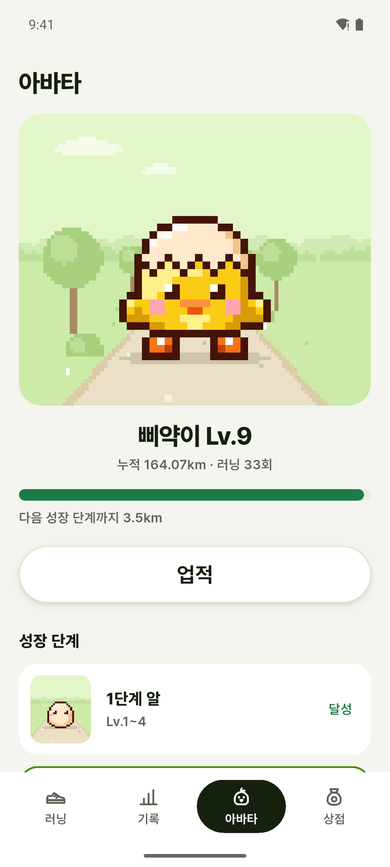
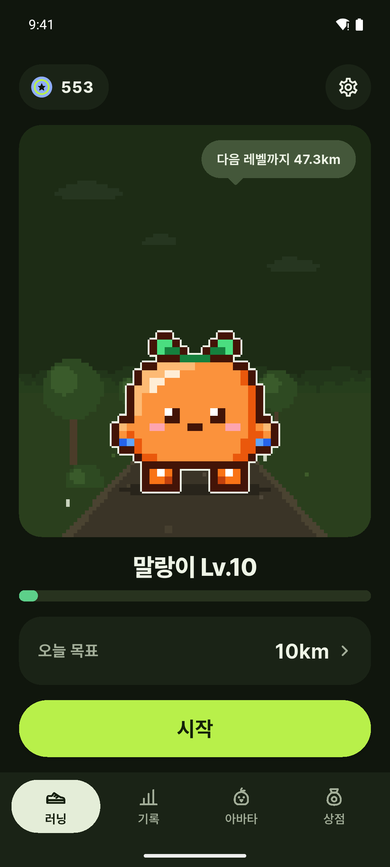
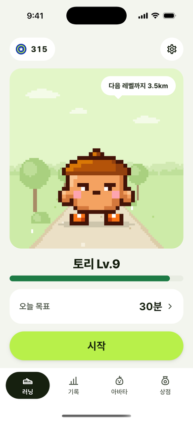

WHY
러닝을 꾸준히 하게 만드는 작은 친구
정확한 기록
화면을 꺼도 거리·시간·페이스·경로가 끊기지 않고 기록돼요.
자라는 캐릭터
병아리·젤리·도토리 중 하나가 찾아와, 달린 거리만큼 레벨 업하고 네 단계로 자라요.
벌주지 않는 육성
오래 쉬어도 레벨은 그대로예요. 표정만 졸려져서 다시 달릴 이유가 돼요.
HOW IT WORKS
러닝 한 번은 이렇게 흘러가요
목표 고르고 시작
지난번 목표가 골라져 있어 시작 버튼 한 번이면 3초 뒤 기록이 시작돼요.
달리기
거리를 가장 크게 보여 줘요. 캐릭터가 같이 달리고, 멈추면 자동으로 일시정지돼요.
기록과 보상
경로와 1km 구간 페이스를 보여 주고, 경험치·코인·배지를 받아요.

키우고 꾸미기
코인으로 모자·소품을 사서 입히고, 다음 성장 단계까지 남은 거리를 봐요.
FEATURES
주요 기능
러닝 기록
GPS 경로, 거리, 시간, 평균·현재 페이스, 1km 구간 기록
자동 보정
멈추면 자동 일시정지, 버스·지하철로 의심되는 구간은 기록에서 빼요
알림에서 조작
화면을 켜지 않고 알림에서 일시정지·재개·종료, 음성 안내
기록 보기
주·월·년·전체 통계와 그래프, 러닝 상세, 공유 카드
성장과 보상
레벨·외형 4단계, 업적 배지 12개, 코인 상점
내 데이터
서버 없이 기기에만 저장, 백업 내보내기·가져오기
PLATFORM
Android와 iPhone, 라이트와 다크
하나의 Flutter 코드로 두 플랫폼을 만들었어요. 백그라운드 위치 기록은 Android 포그라운드 서비스와 iOS 백그라운드 위치를 각각 맞췄어요.


BUILT WITH
만든 방식
기술
Flutter, Riverpod, Drift(SQLite), geolocator, 로컬 알림. 기능마다 화면·로직·데이터 계층을 나눴어요.
로컬 우선
서버 없이 기기에서 동작해요. 데이터는 저장소 인터페이스를 거쳐, 나중에 서버로 옮길 때 구현만 바꿔요.
테스트 먼저
기능마다 테스트를 먼저 쓰고, 에뮬레이터에서 실제로 조작해 확인했어요. 기획·설계 문서는 저장소에 함께 있어요.
코드와 문서는 GitHub에
앱 코드, 기획서, 설계 문서, 화면설계서를 볼 수 있어요.